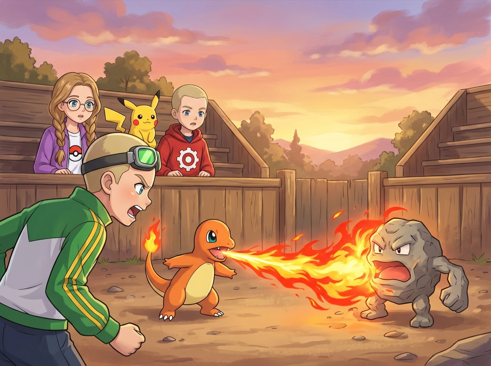
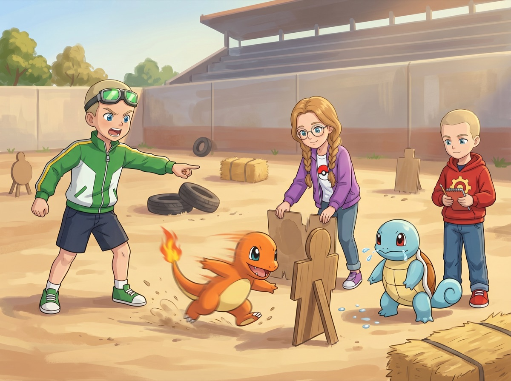
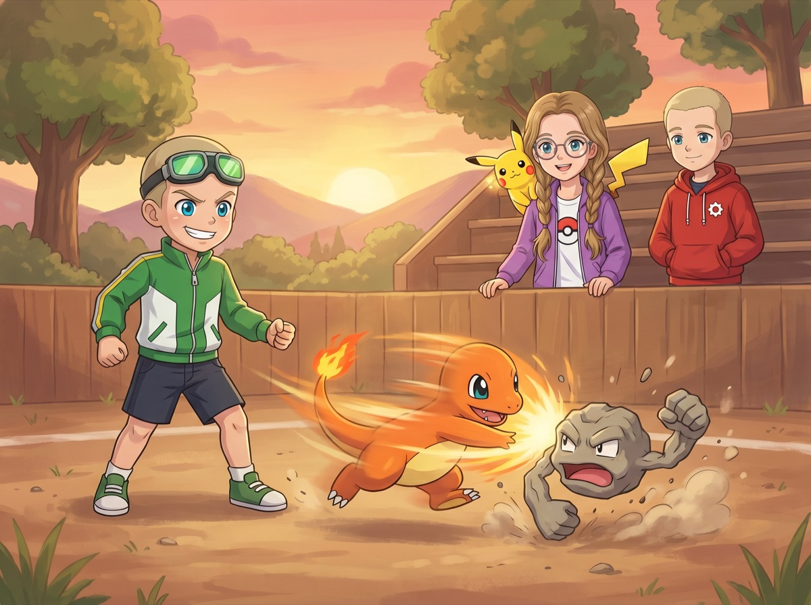
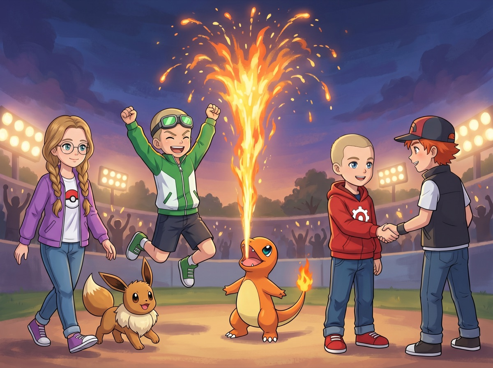

Сезон 1 — Три тренера и тайна Серебряного леса
Эпизод 3. «Первый бой Макстера»
Каменный Брод

Городок Каменный Брод начинался с моста — широкого, сложенного из серых булыжников. Под мостом бежала неглубокая речка, в которой Сквиртл (Squirtle) немедленно попытался искупаться. Чармандер (Charmander) покосился на воду и на всякий случай отошёл подальше.
— Сквир! — радостно крикнул он, свесившись с перил.
— Не сейчас, — произнёс Ромус, аккуратно придерживая его за панцирь. Красная худи с логотипом шестерёнки на груди была ему чуть великовата, но Ромус носил её с таким спокойным достоинством, будто так и задумано.
— Вон оно! — Макстер ткнул пальцем вперёд. За мостом виднелась площадь с деревянными трибунами и размеченным полем для боёв. На поле стоял тренер — мальчик постарше, с рыжими волосами.
У его ног парил серый округлый покемон с двумя мускулистыми руками.
— Бой! Настоящий бой! — завопил Макстер.
Зелёные очки-гоглы на лбу Макстера подпрыгнули от восторга. Он даже не заметил, как чуть не споткнулся о Чармандера, который шёл рядом и с опаской косился на каменные стены.
— Чар! — возмутился Чармандер, обиженно отодвигаясь.
— Прости, друг! Но ты видишь? Арена!
— Это же то, ради чего мы вышли из дома! — добавил он, подпрыгивая.
— Мы вышли из дома, потому что ты ответил «пойдём, будет весело», — уточнил Ромус.
— И что — разве не весело?
Ромус глянул на подпалённый край своего рюкзака.
— Весело, — отозвался он без выражения. — Особенно для моего рюкзака.
Кристи шла впереди, русые косички покачивались в такт шагам. Фиолетовые очки поблёскивали на солнце. Пикачу (Pikachu) на её плече уставился на арену — и навострил уши.
— Пика, — произнёс он тихо. Заинтересованно.
— Это тренировочная арена для новичков, — сказала Кристи, остановившись у входа. — Здесь проводят первые бои. Правила простые: один на один, без замен.
— Отлично! — Макстер уже шагнул к полю. — Чармандер, мы идём!
— Макстер, подожди, — отозвалась Кристи. — Тот покемон — Джиодуд (Geodude). Каменный тип.
— И что?
— Огонь против камня не работает.
— Ну и ладно! Мы же не только огнём. Мы быстрые! Правда, Чармандер?
— Чар! — уверенно подтвердил Чармандер, хотя выглядел так, будто понятия не имеет, о чём речь.
Иви (Eevee), который шёл рядом с Кристи, тихо вздохнул и сел. Как зритель, который заранее знает, чем закончится фильм.
Огонь против камня

Рыжий тренер представился коротко:
— Толик. Третий бой за сегодня. Поехали?
— Поехали! — Макстер встал на позицию тренера. — Чармандер, вперёд!
Чармандер выбежал на поле, пламя на хвосте весело затрещало.
Ромус сел на трибуну и достал блокнот. Кристи села рядом. Пикачу между ними скрестил лапки — как судья, который уже вынес приговор, но решил дать последнее слово.
— Чармандер, огонь! — крикнул Макстер.
Чармандер вдохнул глубоко и выдохнул яркую струю пламени — гораздо мощнее, чем вчера. Огонь врезался в Джиодуда.
Джиодуд даже не шелохнулся. Пламя облизало его каменное тело и погасло, как свечка на ветру.
— Эм... Почему он не упал? — пробормотал Макстер. — Ещё раз! Сильнее!
Чармандер выдохнул снова — мощнее, жарче.
— Давай, Чармандер! Ты можешь! — крикнул Макстер.
Джиодуд покачался в воздухе, как будто его пощекотали.
— Джиодуд, каменный бросок, — спокойно выдохнул Толик.
Джиодуд поднял обе руки — и швырнул камень размером с кулак. Чармандер попытался увернуться, но камень попал ему в бок. Чармандер покатился по земле, вскочил — и зарычал.
— Чар!
— Не сдаёмся! Огонь, ещё!
— Он повторяет одно и то же, — тихо сказала Кристи на трибуне.
— Я знаю, — ответил Ромус, записывая в блокнот. — Но он не услышит. Не сейчас.
Третий выдох Чармандера был слабее. Джиодуд снова не заметил.
— Джиодуд, ещё раз! — скомандовал Толик.
Каменный бросок — и Чармандер упал. На этот раз поднимался медленно.
— Чармандер! Ты можешь! — Макстер сжал кулаки.
Чармандер встал. Пламя на хвосте мерцало тускло. Он сделал шаг вперёд — и ноги подкосились.
— Твой покемон устал, — бросил Толик. Не злобно — просто по делу. — Бой окончен. Я победил.
Макстер стоял на месте. Руки опустились. Он уставился на Чармандера, который тяжело дышал на земле, — и ничего не произнёс.
— Чар... — тихо сказал Чармандер, виновато глядя на хозяина.
Макстер подбежал, опустился на колено и осторожно поднял покемона.
— Ты был крутой, — ответил он тихо. — Это я виноват. Ой, я не подумал... Надо было по-другому.
Толик подошёл и протянул руку.
— Хороший Чармандер. Сильное пламя для новичка. Но огонь против камня — пустая трата сил.
Макстер пожал руку. Улыбка вышла кривой.
— Я даже не знал, что бывают покемоны, которым огонь вообще не страшен.
— Бывают, — отозвался Толик. — Каменные, земляные, водные — им огонь как тёплый ветерок.
— И что же делать? — спросил Макстер.
— Думать, — пожал плечами Толик. — Если хочешь реванш — приходи вечером. Я тут до заката.
— Приду, — сказал Макстер.
На трибуне Пикачу тихо вздохнул и убрал скрещённые лапки. Как он и думал.
Уроки и тренировка

Они сидели на каменной скамейке за ареной. Чармандер лежал на коленях у Макстера — уставший, но уже бодрее. Пламя на хвосте горело ровно. Иви аккуратно нюхал Чармандера и чуть-чуть ткнулся носом — мол, ничего, бывает.
— Ладно, — выдохнул Макстер. Голос хриплый. — Объясни мне. Почему огонь не сработал?
Кристи поправила фиолетовые очки.
— У каждого покемона есть свой тип. Огонь, вода, камень, трава, электрический — и ещё много других. У каждого типа есть сильные и слабые стороны.
— Как «камень-ножницы-бумага»? — спросил Ромус, подняв глаза от блокнота.
— Похоже, но сложнее. Огонь сильнее травы. Вода сильнее огня.
Она подняла камешек с земли.
— А камень... камню огонь почти не вредит. Слишком твёрдый.
— То есть Чармандер вообще не может победить каменного покемона? — Макстер нахмурился.
— Может. Но не огнём. Нужна другая тактика. Если покемон знает атаку другого типа — например, обычную физическую атаку — он может обойти защиту.
— Чармандер знает только огонь и царапанье, — мрачно выдохнул Макстер.
— Царапанье — это «Царапины», обычная атака, — кивнула Кристи. — Но она слабая.
Она щёлкнула пальцами.
— Есть «Быстрая атака». Рывок на большой скорости — не огненный, а чисто скоростной. Джиодуд медленный. Если Чармандер будет быстрее — сможет бить и уклоняться.
Ромус записал что-то и постучал ручкой по странице.
— Подожди. Тут есть закономерность, — бросил он. — В бою Джиодуд попадал, только когда Чармандер стоял на месте и дышал огнём. Если бы он двигался...
— Именно, — сказала Кристи. — Скорость — это преимущество Чармандера. Толик командовал медленно, потому что Джиодуд медленный. Если Макстер будет командовать быстро...
— Я всегда командую быстро! — Макстер вскочил. Чармандер чуть не свалился с колен, но поймал равновесие хвостом. — Это единственное, что я делаю быстро!
— Это правда, — подтвердил Ромус. — Он даже ест быстро. И говорит быстро. И проигрывает быстро.
— Эй!
— Ну а что? — Ромус пожал плечами. — Это не оскорбление. Это факт.
Кристи чуть улыбнулась.
— Нужна тренировка. Чармандер должен понять команду «Быстрая атака» — резкий рывок вперёд, удар и сразу отход.
— Не стоять? — уточнил Макстер.
— Не стоять. Не ждать. Ударил — назад.
— Как в догонялках? — уточнил Макстер.
— Почти. Только тот, кого догоняешь, каменный и не в настроении.
Макстер усмехнулся — впервые за последний час.
— Чармандер, встаёшь?
Чармандер открыл глаза. Глянул на Макстера. Потом медленно поднялся и выпрямился.
Он выдохнул маленький огонёк. Не для атаки — для храбрости.
— Чар! — произнёс он. Решительно.
Следующие два часа Макстер и Чармандер носились по пустырю за ареной. Кристи ставила цели — камни, палки, старую бочку. Чармандер должен был добежать, ударить и вернуться за три секунды.
Первые десять попыток — мимо. Чармандер промахивался, спотыкался, один раз врезался в бочку головой.
— Чар! — обиженно чихнул он огнём. Бочка задымилась.
— Ой! Не-не-не! — Макстер замахал руками.
Сквиртл, дежуривший рядом, привычно потушил бочку струёй воды.
— Сквир! — гордо отрапортовал он с видом пожарного на смене.
— Спасибо, Сквиртл, — кивнул Ромус. — Ты сегодня на дежурстве.
На пятнадцатой попытке Чармандер добежал до камня, ударил лапой и отскочил назад. Чисто. Быстро.
— Вот! — завопил Макстер. — Видела?
— Видела, — кивнула Кристи. — Ещё раз. Десять раз подряд.
— Десять?!
— Десять, — подтвердила она спокойно.
На двадцатой попытке Чармандер делал это уже без заминки. Рывок, удар, отход. Пламя на хвосте разгорелось ярко — он был в своей стихии.
— Чар-чар! — выдохнул он гордо.
— Он готов, — кивнула Кристи.
— Мы оба готовы, — твёрдо ответил Макстер.
— Идите, — напутствовала Кристи. — Покажите ему, что учились не зря.
Ромус закрыл блокнот. На последней странице было написано: «Скорость бьёт силу. Запомнить.»
Реванш

Солнце садилось за холмы. Арена окрасилась в оранжевый. Толик стоял на своём месте — Джиодуд парил рядом, каменный и невозмутимый.
— Вернулся, — заметил Толик. Не удивлённо — скорее, с уважением. — Готов?
— Готов, — ответил Макстер. Голос ровный. Без крика, без восклицаний. Чармандер встал перед ним — лапы чуть согнуты, хвост горит ярко.
Ромус на трибуне раскрыл блокнот на чистой странице. Кристи села рядом, Пикачу — на её плече. Иви свернулся у ног.
— Начали, — ответил Толик. — Джиодуд, каменный бросок!
Джиодуд швырнул камень.
— Чармандер, влево! — быстро скомандовал Макстер.
Чармандер метнулся влево — камень пролетел мимо. Впервые за день.
— Быстрая атака! — крикнул Макстер.
Чармандер рванул вперёд — оранжевая молния по песку арены. Ударил Джиодуда лапой в бок и отскочил назад раньше, чем тот успел развернуться.
Джиодуд покачнулся. Впервые.
— Ого, — сказал Толик. — Ты кое-чему научился.
— Ещё раз! Быстрая атака!
Рывок. Удар. Отход. Джиодуд попытался поймать Чармандера — но тот уже был в другом конце поля.
— Каменный бросок! — скомандовал Толик.
Камень полетел — но Макстер уже кричал:
— Вправо и сразу вперёд!
Чармандер увернулся и влетел в Джиодуда на полной скорости. Каменный покемон отлетел назад, ударился о землю — и медленно поднялся. Трещина пошла по каменному плечу.
— Джиодуд, держись! — крикнул Толик.
— Чармандер, не останавливайся!
Ещё рывок. Ещё удар. Джиодуд попытался схватить Чармандера — пальцы сомкнулись на пустом месте. Чармандер уже был сзади.
Последний удар — и Джиодуд медленно опустился на землю. Руки обвисли.
— Джиодуд не может продолжать, — отозвался Толик и улыбнулся. По-настоящему. — Ты выиграл.
Макстер стоял на месте. Три секунды. Потом до него дошло.
— Мы выиграли?! — Он бросился к Чармандеру. — МЫ ВЫИГРАЛИ!
Чармандер подпрыгнул, выдохнул огненный фонтанчик в небо — красиво, ярко, как фейерверк. Потом приземлился и горделиво задрал хвост.
— Чар-чар! — выдохнул он с видом чемпиона.
На трибуне Пикачу одобрительно кивнул — и даже хлопнул лапками. Один раз. Больше не положено по статусу.
— Пика, — произнёс он. В переводе: «Неплохо. Для новичка.»
Толик подошёл.
— Утром ты бил в лоб и не думал. Вечером — двигался и менял тактику. За один день — серьёзный рост.
Он протянул руку, и Макстер крепко пожал её.
Макстер улыбнулся — широко, по-настоящему.
— Я проиграл утром. Но это оказалось полезнее, чем если бы я выиграл.
Ромус поднял глаза от блокнота.
— Вот это запишу дважды, — хмыкнул он.
Кристи встала с трибуны и подошла. Иви бежал рядом, хвост весело мелькал.
— Хороший бой, — сказала она. Коротко, но тепло.
— Спасибо, Чармандер, — бросил Макстер и погладил покемона по голове.
— Ты слушал и сделал выводы, — добавила Кристи. — Это важнее, чем сила.
— Спасибо, — произнёс Макстер. — Серьёзно. Без тебя я бы просто палил огнём до утра.
— Это точно, — согласился Ромус.
— Эй!
Сквиртл подбежал к Чармандеру и протянул лапу. Чармандер посмотрел на лапу, потом на Сквиртла — и осторожно хлопнул по ней своей.
— Сквир!
— Чар!
— Вот это мне нравится, — тихо сказала Кристи.
Они собирали вещи, когда к арене подошла женщина в фартуке.
— Ребята, вы здесь ночуете? У меня гостиница за углом. Есть свободные комнаты.
— Да, спасибо! — ответил Макстер.
— Только имейте в виду, — женщина понизила голос, — на ночь не выпускайте покемонов из покеболов. И двери закрывайте.
Кристи нахмурилась.
— Почему?
Женщина оглянулась по сторонам. Площадь опустела, тени от фонарей вытянулись.
— За последнюю неделю в городе пропали три покемона. Ночью. Без следов. Хозяева просыпаются утром — а покеболы пустые.
Пикачу прижал уши. Иви прижался к ноге Кристи.
— Три покемона? — переспросил Ромус. — И никто не видел, кто это?
— Никто. Ни звука, ни следов. Как тень прошла — и всё.
Тишина. Ветер качнул фонарь над ареной. Где-то далеко крикнула ночная птица.
Макстер прижал Чармандера к себе крепче.
— Никто не тронет моего покемона, — отозвался он тихо.
Кристи поправила очки. Глаза за стёклами стали серьёзными.
— Спокойно. Я знаю, что делать, — сказала она. — Разберёмся.
Ромус медленно раскрыл свои записи и вывел одно слово: «Тень.»
Где-то в темноте за городом мелькнул силуэт — быстрый, бесшумный. И погас уличный фонарь.
Урок этого эпизода
Проигрыш — не конец. Это начало, если ты готов учиться.